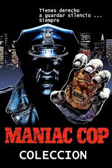
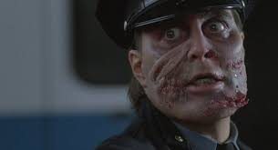
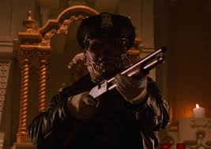
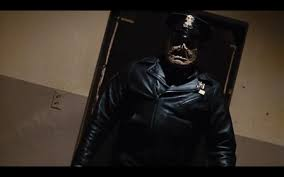

“El policía implacable”
Maniac Cop es un oficial de policía convertido en asesino vengativo. Conocido por su uniforme de policía oscuro y su actitud implacable, acecha a la ciudad sin dejar rastros.
Apareció por primera vez en Maniac Cop (1988), dirigida por William Lustig. Su fuerza sobrehumana y su determinación lo hacen casi imposible de detener.
Escenas y apariciones



Música y sonidos espeluznantes
Ficha del personaje
- Nombre completo: Matt Cordell
- Primera aparición: Maniac Cop (1988)
- Creador: William Lustig
- Arma: Pistola de policía
- Alias: El policía asesino